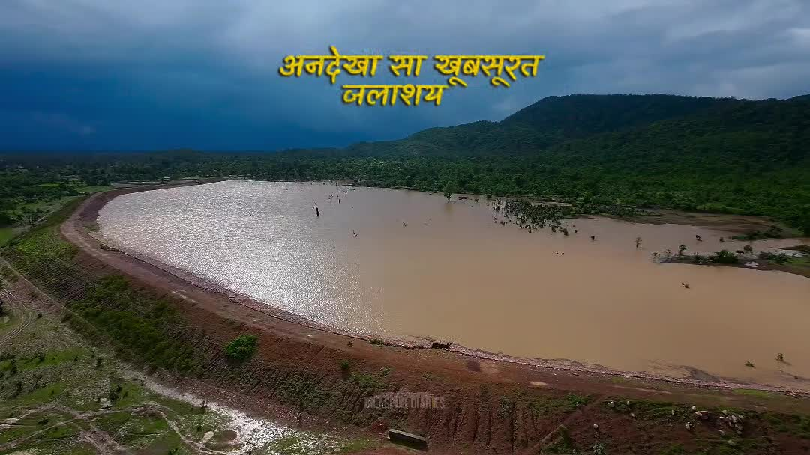
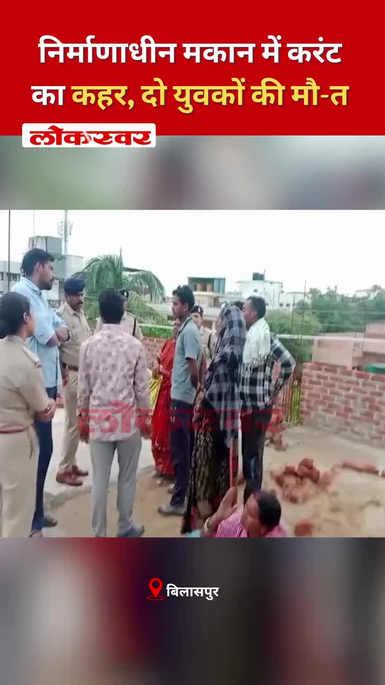
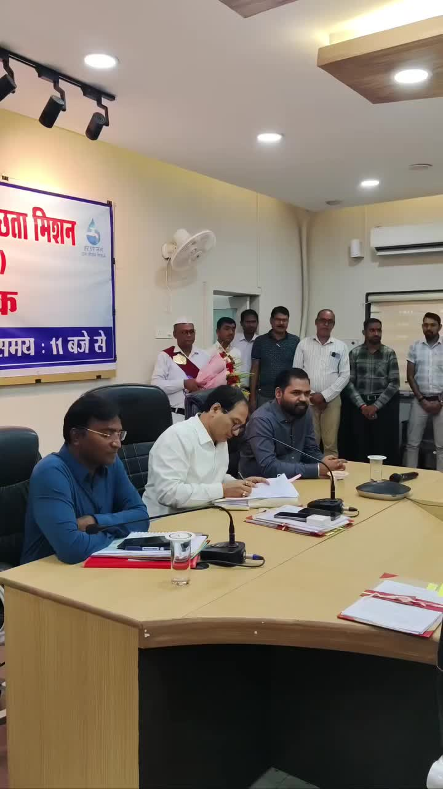
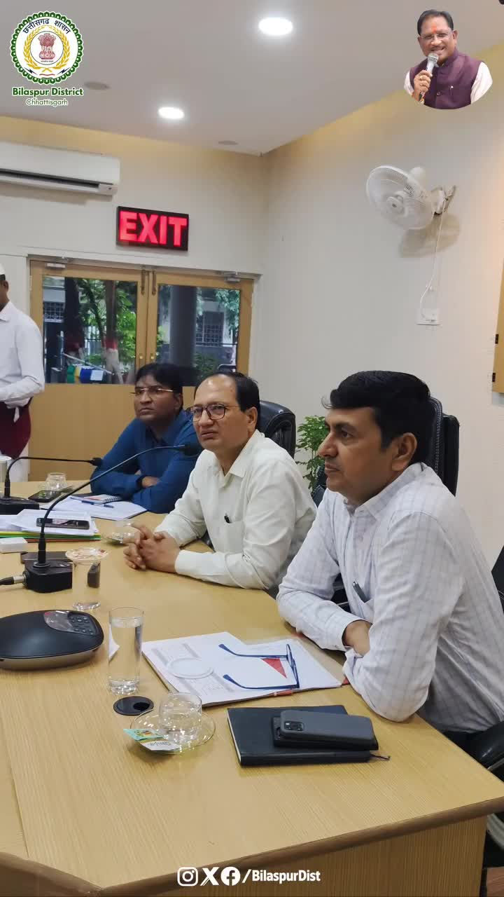
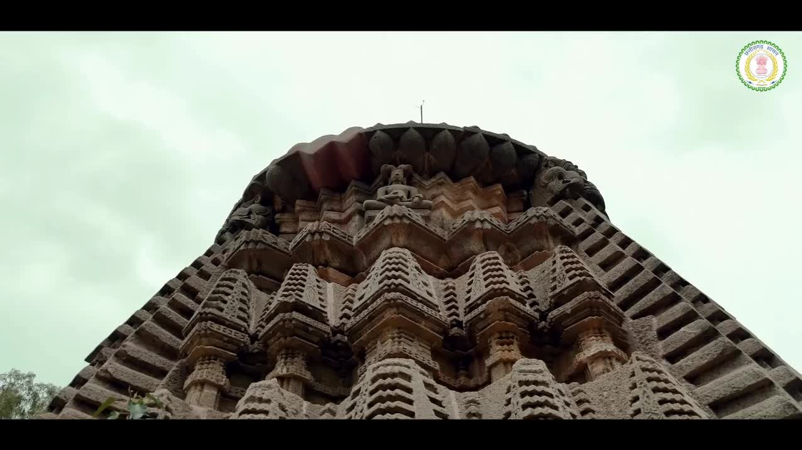

Bilaspur News Hub
1
BUSINESS
1
EDUCATION
11
GOVERNMENT
2
HEALTH
3
INFRASTRUCTURE
18
INSTAGRAM NEWS
20
NEWS
1
OTHER
9
POLICE
2
RAILWAY
2
SOCIAL
BUSINESS1

Nai Dunia Bilaspur · Published: Wed, 05 Au | Scraped: 2026-08-05 08:19:37
A young entrepreneur from Champa has revived his grandfather's recipe, marketing Tandoori Samosa Patti that now sells across several districts. The product is gaining popularity for its unique flavor.
EDUCATION1

Government Engineering College Bilaspur · Published: 2026-08-04 | Scraped: 2026-08-04 16:12:46
The Government Engineering College Bilaspur has issued a notice regarding the transfer of students or staff. Details about the transfer process and deadlines are included in the announcement.
GOVERNMENT11

Nai Dunia Bilaspur · Published: Wed, 05 Au | Scraped: 2026-08-05 08:19:37
Villagers at Bilaspur Jan Darshan complained that foul water flowing from a school threatens health, urging the collector to act. The issue highlights poor sanitation infrastructure in rural schools.

Lokswar · Published: Wed, 05 Au | Scraped: 2026-08-05 08:19:37
The Chhattisgarh government has issued a new order transferring the charges of two under secretaries in the secretariat service. The changes aim to streamline administrative responsibilities.

BREAKINGFormer CGPSC secretary bail rejected over paper leak / पूर्व सचिव की जमानत खारिज, पेपर लीक मामले में
Nai Dunia Bilaspur · Published: Wed, 05 Au | Scraped: 2026-08-05 13:38:55
A court has denied bail to a former CGPSC secretary accused of leaking exam papers, calling it a crime worse than murder. The judge warned that tampering with millions of youths' futures cannot be tolerated.
Lokswar · Published: Wed, 05 Au | Scraped: 2026-08-05 13:38:55
DG Jail Himanshu Gupta conducted a surprise inspection of Bilaspur Central Jail, reviewing infrastructure and announcing new modern facilities for inmates. The visit aimed to ensure better rehabilitation and security standards.

Lokswar · Published: Wed, 05 Au | Scraped: 2026-08-05 13:38:55
The district administration held a meeting to strengthen law and order. Collector and Superintendent of Police directed strict enforcement to maintain peace and security.

Lokswar · Published: Wed, 05 Au | Scraped: 2026-08-05 13:38:55
A cabinet meeting chaired by CM Vishnu Deo Sai took key decisions. Details of the announcements were released to the public.

CG Wall · Published: Tue, 04 Au | Scraped: 2026-08-04 16:12:46
The Chhattisgarh High Court, citing a six-year delay in justice, ordered the SDM to deliver a verdict within 30 days, emphasizing swift judicial decisions.
The Hitavada · Scraped: 2026-08-05 08:19:37
Protesters are demanding that a retired judge from outside Jharkhand investigate the recent paper leak case. They argue that an external probe would ensure impartiality and accountability in the examination scandal.
The Hitavada · Scraped: 2026-08-05 08:19:37
The FDA portal is receiving a flood of rivalry-driven complaints, overwhelming its system. Authorities are working to streamline the process and address the surge in reports.

District Administration Bilaspur · Published: 2026-08-05 | Scraped: 2026-08-05 08:19:37
G News Bilaspur · Published: 2026-08-04 | Scraped: 2026-08-04 16:12:46
Arriving in Bilaspur, Devendra Yadav criticised the BJP government and raised concerns about the state's health services.
HEALTH2

CG Wall · Published: Wed, 05 Au | Scraped: 2026-08-05 13:38:55
Heavy rains in Bilaspur's Kotah assembly forest regions have heightened malaria risk among tribal communities. Authorities are urged to deploy special health teams and preventive measures to curb the spread.

The Hitavada · Scraped: 2026-08-05 08:19:37
Analogue paneer has been banned across Jharkhand for a year due to adulteration concerns. The move aims to protect public health and ensure food safety standards.
INFRASTRUCTURE3

Lokswar · Published: Tue, 04 Au | Scraped: 2026-08-04 16:12:46
Two laborers died after being electrocuted at a construction site on Ring Road No-2, highlighting safety lapses at ongoing building projects.

The Hitavada · Scraped: 2026-08-05 08:19:37
The High Court questioned the NMC and PWD about flooded roads, asking who truly serves taxpayers. The court’s grilling highlights poor infrastructure management and calls for urgent repairs.
BREAKINGBasazhal bridge collapses, traffic diverted / बासाझाल पुल टूटने के बाद वैकल्पिक मार्ग से आवागमन
G News Bilaspur · Published: 2026-08-04 | Scraped: 2026-08-04 16:12:46
The Basazhal bridge collapsed, prompting authorities to issue alerts and divert traffic via an alternative route.
INSTAGRAM NEWS18

The Bilaspur Diaries Instagram page invites locals to share offroading locations for adventure. Users can message the page with their preferred spots to explore rugged terrain.
Instagram/@bilaspurct posts a devotional message 'Har Har Mahadev' promoting the ongoing Kavad Yatra in Bilaspur. The post encourages participation in this Hindu religious procession.
सावन के पहले सोमवार को धमतरी में महानदी के किनारे रुद्रेश्वर महादेव मंदिर पर भक्तों की भारी भीड़ उमड़ी, जिससे आस्था का नया इतिहास रच गया। इस आयोजन में अभूतपूर्व भागीदारी देखी गई, जो धार्मिक आस्था की एक नई मिसाल बन गई।
भारी बारिश के दौरान बिलासपुर में एक विशाल पेड़ सड़क पर गिर गया, जिससे यातायात बाधित हो गया। विधायक ने तुरंत मोर्चा संभाला और पेड़ हटाने तथा यातायात सुरक्षित करने का समन्वय किया। इस घटना ने नियमित पेड़ रखरखाव की आवश्यकता को रेखांकित किया।

सिविल लाइन इलाके में निर्माणाधीन मकान में काम कर रहे दो युवकों की करंट लगने से मौत हो गई। दुर्घटना के बाद सुरक्षा मानकों की कमी पर सवाल उठे और सख्त निरीक्षण की मांग की गई। अधिकारियों ने मामले की जाँच शुरू कर दी है।
रायपुर पुलिस ने ड्रग तस्करी के खिलाफ एक बड़ी कार्रवाई में एक ट्रक से 191 किलोग्राम मारिजुआना जब्त किया, जिसकी कीमत ₹1.20 करोड़ है। यह जब्ती अवैध नशीले पदार्थों के व्यापार को रोकने के लिए पुलिस के बढ़ते प्रयासों को दर्शाती है।
रायपुर में 1.13 करोड़ रुपये के काले धन घोटाले का पर्दाफाश हुआ, जिसमें दो महिला ठगों को गिरफ्तार किया गया, जो अंतरराज्यीय रूप से सक्रिय थीं। धोखाधड़ी में अवैध धन शोधन शामिल था। पुलिस आगे की जांच में जुटी है।

डेढ़ वर्ष के सफल कार्यकाल के बाद संयुक्त कलेक्टर श्री अभिषेक दीवान को भावभीनी विदाई।
कलेक्टर श्री संजय अग्रवाल ने शाल, श्रीफल एवं स्मृति चिन्ह भेंट कर सम्मानित करते हुए सुशासन एवं अभिसरण विभाग में नई जिम्मेदारी के लिए शुभकामनाएं दीं। बिलासपुर में उनके योगदान को सराहा गया और उज्ज्वल भविष्य की कामना की गई।
#Bilaspur #GoodGovernance #Administration #Chhattisgarh by @bilaspurdist


कोंडागांव के फरसगांव में युवक विजय सेठिया का शव घर के कमरे में संदिग्ध परिस्थितियों में मिला। मौके से ब्लेड बरामद हुआ है। पुलिस प्रथम दृष्टया इसे आत्महत्या मान रही है, लेकिन वास्तविक कारणों का खुलासा जांच और पोस्टमार्टम रिपोर्ट के बाद होगा।#Kondagaon #Farasgaon #CGNews #BreakingNews #PoliceInvestigation by @g_news_bilaspur


बिलासपुर के सकरी थाना क्षेत्र में पेंडारीडीह-कोपरा मार्ग पर ट्रक की टक्कर से मुंगेली निवासी एक महिला की मौके पर ही मौत हो गई, जबकि वाहन चालक गंभीर रूप से घायल हो गया। पुलिस ने ट्रक जब्त कर चालक को हिरासत में लिया है। प्रारंभिक जांच में चालक के नशे में होने की बात सामने आई है।#BilaspurNews #Sakri #RoadAccident #CGNews #Mungeli by @g_news_bilaspur


Raipur police uncovered a ₹1.13‑crore scam where fraudsters promised to turn black paper into real money using chemicals, leading to arrests.
An Instagram post highlights recent developments concerning Bilaspur's ring road, drawing attention to traffic and infrastructure changes.
Two young women were filmed climbing out of a moving car's sunroof on a Bilaspur street to create an Instagram reel, prompting safety concerns and a viral video.

Collector emphasizes that during monsoon, protecting lives and supporting farmers are top priorities, with coordinated relief and safety measures.
New anti‑paper‑leak law passed in Lok Sabha aims to curb exam cheating, restoring student confidence through stricter penalties.

Chief Minister Vishnu Deo Sai highlighted that preserving heritage and culture defines the state's identity and pride.

Collector Sanjay describes Janadarshan as an effective forum where public grievances are heard and resolved promptly.
NEWS20
.jpg)
Nai Dunia Bilaspur · Published: Wed, 05 Au | Scraped: 2026-08-05 04:58:32
<img src="https://img.naidunia.com/naidunia/ndnimg/05082026/05_08_2026-rticgcourt_(1).jpg" />छत्तीसगढ़ हाई कोर्ट के जस्टिस सचिन सिंह राजपूत की एकलपीठ ने व्यवस्था दी है कि विवाह पंजीयन आवेदन, जन्मतिथि व पहचान पत्र जैसे निजी दस्तावेज बिना किसी बड़े जनहित के आरटीआई में तीसरे पक्ष को नहीं दिए जा सकते। आ

Nai Dunia Bilaspur · Published: Wed, 05 Au | Scraped: 2026-08-05 04:58:32
<img src="https://img.naidunia.com/naidunia/ndnimg/05082026/05_08_2026-policetransfer.jpg" /> बिलासपुर एसएसपी रजनेश सिंह ने जिले के 13 निरीक्षकों का तबादला कर जितेंद्र गुप्ता को कोनी और सलीम खाखा को मस्तूरी का नया थाना प्रभारी बनाया है, जबकि कृष्णचंद सिदार को यातायात थाने का प्रभार सौंपा गया है। दूस

Nai Dunia Bilaspur · Published: Wed, 05 Au | Scraped: 2026-08-05 04:58:32
<img src="https://img.naidunia.com/naidunia/ndnimg/05082026/05_08_2026-teenmoteathi.jpg" />मरवाही वन मंडल में तीन हाथियों के दल ने मध्य प्रदेश सीमा से प्रवेश कर चिचगोहना और घुसरिया गांव में तीन मकान तोड़ दिए और 15 किसानों की फसलें रौंद दीं। वन विभाग ने इलाके में अलर्ट जारी कर दिया है और ग्रामीणों को

Nai Dunia Bilaspur · Published: Wed, 05 Au | Scraped: 2026-08-05 04:58:32
<img src="https://img.naidunia.com/naidunia/ndnimg/05082026/05_08_2026-traileraccdnt.jpg" />रतनपुर के दर्रीपारा मोड़ के पास एनएच पर खड़े खराब ट्रेलर से पीछे से आ रहे दो अन्य ट्रेलर एक के बाद एक टकरा गए। हादसे में दोनों चालकों के केबिन में फंसने के कारण पुलिस ने कटर से काटकर उन्हें बाहर निकाला। एक चा

Nai Dunia Bilaspur · Published: Wed, 05 Au | Scraped: 2026-08-05 04:58:32
<img src="https://img.naidunia.com/naidunia/ndnimg/05082026/05_08_2026-suprimcout12.jpg" />रायगढ़ की मेसर्स अंजनी स्टील्स लिमिटेड से जुड़े जल शुल्क विवाद में सुप्रीम कोर्ट के जस्टिस जे.बी. पारदीवाला और जस्टिस के. विनोद चंद्रन की पीठ ने छत्तीसगढ़ सरकार की विशेष अनुमति याचिका SLP खारिज कर दी है।

Lokswar · Published: Wed, 05 Au | Scraped: 2026-08-05 08:19:37
The monsoon has become active again in Chhattisgarh, prompting heavy rain alerts across several districts. Weather officials warn of possible flooding and travel disruptions.

Nai Dunia Bilaspur · Published: Wed, 05 Au | Scraped: 2026-08-05 11:59:46
<img src="https://img.naidunia.com/naidunia/ndnimg/05082026/05_08_2026-dgbspjel.jpg" />केंद्रीय जेल बिलासपुर के निरीक्षण के दौरान प्रदेश के डीजी जेल हिमांशु गुप्ता ने शिक्षक बनकर बंदियों की अंग्रेजी की क्लास ली और उन्हें रोजगार व आत्मविश्वास बढ़ाने के टिप्स दिए।

Nai Dunia Bilaspur · Published: Wed, 05 Au | Scraped: 2026-08-05 11:59:46
<img src="https://img.naidunia.com/naidunia/ndnimg/05082026/05_08_2026-sanpfir.jpg" />बिलासपुर में सर्पदंश से मौत के नाम पर हुए फर्जी मुआवजा घोटाले की जांच जारी है। विधानसभा में मामला उठने के बाद दर्ज 15 एफआईआर में अब तक 20 से अधिक आरोपी गिरफ्तार हो चुके हैं। रूटीन अपराधों, वीआईपी ड्यूटी और दस्तावेज

Nai Dunia Bilaspur · Published: Wed, 05 Au | Scraped: 2026-08-05 11:59:46
<img src="https://img.naidunia.com/naidunia/ndnimg/05082026/05_08_2026-suprimcout13_202685_75555.jpg" />धमतरी के कुरुद स्थित मंदिर का मामला; पक्षकार न तीसरे पक्ष का हित बना सकेंगे, न प्रबंधन में बदलाव कर सकेंगे, हर तीन माह में कलेक्टर को देना होगा खातों का ब्योरा

The Hitavada · Scraped: 2026-08-05 08:19:37

The Hitavada · Scraped: 2026-08-05 08:19:37

The Hitavada · Scraped: 2026-08-05 08:19:37
The Hitavada · Scraped: 2026-08-05 08:19:37
The Hitavada · Scraped: 2026-08-05 08:19:37
The Hitavada · Scraped: 2026-08-05 08:19:37
The Hitavada · Scraped: 2026-08-05 08:19:37
The Hitavada · Scraped: 2026-08-05 08:19:37
The Hitavada · Scraped: 2026-08-05 08:19:37
G News Bilaspur · Published: 2026-08-04 | Scraped: 2026-08-04 16:12:46
PRIME 04 AUG is a news bulletin aired by G News Bilaspur, covering key updates and events.
G News Bilaspur · Published: 2026-08-04 | Scraped: 2026-08-04 19:24:48
G News Bilaspur reported on 04 AUG 2026 EVN 02. The entry appears to be a placeholder or duplicate. No further details available.
OTHER1

Nai Dunia Bilaspur · Published: Tue, 04 Au | Scraped: 2026-08-04 19:24:48
Two workers were killed when an unauthorized building construction came into contact with an 11 kV power line in Bilaspur. The incident highlights the dangers of violating approved building plans and ignoring electrical safety.
POLICE9

Lokswar · Published: Wed, 05 Au | Scraped: 2026-08-05 08:19:37
A 25-year-old man died after his bike was hit by a bus in Pulgaon, Durg, on Tuesday evening. The tragic road accident prompted a police investigation.
Lokswar · Published: Wed, 05 Au | Scraped: 2026-08-05 08:19:37
A case has been registered against an employee at Arna bricks plant in Bilaspur for stealing a bike, mobile phone and cash. The theft was reported from Chichirda Road under Chakarbhatha police station.
Lokswar · Published: Wed, 05 Au | Scraped: 2026-08-05 08:19:37
Janjgir-Champa police solved a series of temple thefts totalling 16.60 lakh rupees within 48 hours. Three adults and a juvenile were arrested for the crimes.

Lokswar · Published: Wed, 05 Au | Scraped: 2026-08-05 13:38:55
Raipur Rural Police have arrested a suspect carrying an illegal country-made pistol and live cartridges, cracking down on illegal arms. The operation highlights ongoing efforts to curb weapon trafficking in the region.
Lokswar · Published: Wed, 05 Au | Scraped: 2026-08-05 13:38:55
SDM warned animal owners that leaving cattle on roads will invite strict action. The move aims to improve road safety and reduce accidents caused by stray livestock.

CG Wall · Published: Tue, 04 Au | Scraped: 2026-08-04 16:12:46
The IG's review meeting decided to serve summons via WhatsApp and make video recording mandatory, aiming to make policing in Bilaspur range more transparent, accountable, and tech-driven.

CG Wall · Published: Tue, 04 Au | Scraped: 2026-08-04 16:12:46
In a shocking love marriage murder, a son-in-law was brutally killed, leading to three arrests; the case highlights severe consequences of forced unions.
The Hitavada · Scraped: 2026-08-05 08:19:37
A fake Instagram account was used to blackmail individuals and incite violence. Police are investigating the case and warning users about online scams.
G News Bilaspur · Published: 2026-08-04 | Scraped: 2026-08-04 16:12:46
A broken-down trailer caused a collision with two other trailers at Ratanpur, trapping the driver inside the cabin.
RAILWAY2

Nai Dunia Bilaspur · Published: Wed, 05 Au | Scraped: 2026-08-05 08:19:37
The Hyderabad-Raxaul Express cancellation has been revoked, and the train will now operate on the previously planned dates. This restores regular rail service for passengers traveling between the regions.

Nai Dunia Bilaspur · Published: Wed, 05 Au | Scraped: 2026-08-05 08:19:37
The RPF and mechanical team located the valuable ring in the train's bio-toilet and handed it over to the passenger, ensuring safe travel.
SOCIAL2

Cycle rally spreads education and green message / हिंदी: बेटियों के सपनों को हवा दी
CG Wall · Published: Wed, 05 Au | Scraped: 2026-08-05 08:19:37
City legislator Amar Agarwal rode a bicycle to inspire daughters' aspirations, advocating education, de-addiction, and environmental awareness. The event highlighted community-driven social initiatives.

BREAKINGTwo workers die while rescuing colleague in Bilaspur / बिलासपुर के कस्तूरबा नगर में दुर्घटना, दो मजदूरों की मौत
Nai Dunia Bilaspur · Published: Wed, 05 Au | Scraped: 2026-08-05 13:38:55
In Bilaspur's Kasturba Nagar, two laborers lost their lives while attempting to save a fellow worker during a rooftop accident. The incident has shocked the local community and raised concerns about safety standards on construction sites.